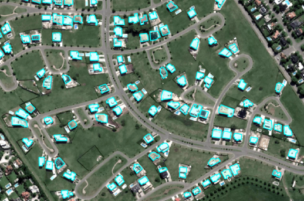
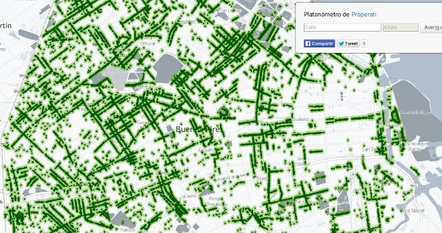

Guía para la apertura de datos en gobiernos subnacionales🔗
El objetivo de esta guía es asistir a los gobiernos subnacionales de Argentina (provincias, ciudades y municipios) en el diseño e implementación de políticas de datos abiertos.
Desde la aprobación del Plan de Apertura de Datos del decreto 117/2016 y la Ley de Acceso a la Información Pública 27275, la Argentina ha comenzado un proceso de promoción de la transparencia del sector público y de la apertura de datos, para potenciar su uso por parte de la ciudadanía.
Iniciativas de apertura de datos en Argentina
Listado con los catálogos de datos abiertos de organismos de la Administración Pública Nacional.
Esta guía se ha inspirado en casos analizados de Canadá, Francia, y el Estado de California, pero ha hecho foco también en casos locales donde Argentina ha sabido innovar cómo han sido la Municipalidades de Córdoba y Mercedes, el Gobierno de la Ciudad de Buenos Aires y la Provincia de Mendoza.
Los módulos que la componen funcionan de forma independiente, y cada uno incorpora diferentes recursos, donde:
- Se proponen herramientas para conformar equipos
- Se identifican datos prioritarios y cómo abrirlos
- Se referencian buenas prácticas para la publicación de datos
- Se abordan estrategias para conectar con distintos sectores de la comunidad que usan datos abiertos (sociedad civil, academia, sector privado, ciudadanía en general) y promover su re-utilización
- Se presentan ejemplos de casos de uso de datos abiertos
¿Por qué publicar datos abiertos?🔗
Incorporar la publicación de datos abiertos como parte del flujo de trabajo de las organizaciones del Estado, tiene efectos tanto internos como externos de gran importancia.
Las administraciones públicas toman rápidamente conciencia del estado de situación de sus activos de datos. El esfuerzo en elevar la calidad de publicación para terceros redunda en que se facilita su consumo por parte de las propias oficinas públicas y se comienzan a generar usos internos nuevos o menos costosos.
La ciudadanía en general, el sector privado y la academia se ven habilitados para producir nuevo valor agregado sobre los datos generados por las instituciones públicas y combinarlos con otras fuentes, ya sean propias o de terceros.
El Podcast de ILDA
En este podcast podemos encontrar dos conversaciones con actores que han tenido roles clave en los procesos de apertura de datos de sus ciudades y gobiernos provinciales.
-
Episodio II - De los bits a los átomos: Entrevista a Javier Arteaga (Nariño, Colombia) y Mariana Romiti (Provincia de Santa Fé)
-
Episodio III - Los datos cerca del vecino: Entrevista a Andrés Vázquez (Municipalidad de Córdoba)
¿Que es un dato abierto y que no lo es?🔗
Un dato abierto es aquel que está publicado en formatos reutilizables, siguiendo estándares y buenas prácticas y que usa explícitamente una licencia libre que permite su reutilización por parte de terceros.
Formatos reutilizables son aquellos que permiten el procesamiento de la información que contienen. Por ejemplo, un archivo de texto separado por comas (CSV) que contiene una lista de los semáforos del municipio y sus coordenadas.
En contraposición, existen otros formatos que dificultan este proceso (las imágenes escaneadas y los archivos PDF son el ejemplo más claro, ya que pueden contener texto o tablas pero no permiten trabajarlo como tal).
En general deben preferirse los formatos no propietarios como JSON o CSV para publicar datos abiertos, en lugar de formatos propietarios como DTA o SAV (que requieren una licencia paga para su uso). Sin embargo, la publicación en formatos propietarios de gran difusión y aceptación como XLSX también puede ser deseable. En estos casos se recomienda publicar los datos también en un formato abierto (ej.: en XLSX y CSV).
En términos de licencia, es importante la adhesión de forma explícita a una que permita la reutilización de los datos con cualquier tipo de fin, incluyendo económicos. En este sentido la licencia Atribución 4.0 Internacional (CC BY 4.0) es la opción recomendada.
No todos los datos públicos son abiertos🔗
Los datos públicos son todos aquellos que los organismos del Estado producen en el cumplimiento de sus funciones orgánicas. No todos los datos públicos pueden o deben publicarse (algunos están protegidos por legislación específica que lo prohíbe o regula) y un dato publicado no es abierto si no cumple con las condiciones explicadas en la sección anterior.
El acceso a la información pública es un derecho reconocido en la República Argentina por la Ley 27275/16, la cual contempla diferentes principios que fomentan la publicidad de toda la información poseída y generada por el sector público.
Una política proactiva de apertura de datos se fortalece el ejercicio de este derecho, y evita cargas a las dependencias que reciben pedidos de acceso a la información pública una y otra vez, sobre los mismos datos.
Existen otras normativas que protegen ciertas ciertas piezas de datos públicos en casos particulares. Estas situaciones que en el marco de las políticas de acceso se contemplan como excepciones, en una iniciativa de datos abiertos deben ser igualmente contempladas, fundamentalmente cuando se tratan de datos que refieren a las personas.
En este sentido es recomendable revisar (entre otras) las siguientes normativas nacionales y sus homólogas a nivel provincial:
-
Ley del Sistema Estadístico 17622/68
-
Ley de Propiedad Intelectual 11723/33
¿Cómo publicar datos abiertos?🔗
No hay una manera correcta de implementar una política de apertura de datos, pues cada organización tiene sus propias dinámicas, estructuras y necesidades. Sin embargo a continuación se abordarán los principales aspectos a tener en cuenta: equipo, marco normativo, financiamiento y publicación.
Equipo🔗
La conformación de un equipo de trabajo y los perfiles y/o roles de sus miembros son claves para avanzar esta línea de trabajo.
Dependiendo de los objetivos, recursos y posibilidades de cada entidad pública algunos de los roles podrán concentrarse o dividirse en una o varias personas. Generalmente, estas iniciativas son llevadas a cabo por equipos pequeños y dinámicos, que se ajustan rápidamente a las necesidades del entorno.
A continuación se identifican los roles y perfiles a tener en cuenta en la conformación de los equipos tanto a nivel municipal como provincial.
Líder político🔗
Toda iniciativa de datos abiertos debe contar con el apoyo de una persona con liderazgo político que comprenda e impulse la política de datos abiertos.
Si bien el proceso debe involucrar a todos los niveles de la administración, la experiencia comparada indica que el apoyo al más alto nivel de la organización (Intendencia, Gobernación) ayuda a legitimar y direccionar las acciones de una política de datos abiertos.
El liderazgo político debe entender claramente el valor de este proceso. En tal sentido, el respaldo de los índices internacionales, casos de estudio y políticas nacionales son buenos instrumentos para que el liderazgo político entienda las razones para participar de este tipo de iniciativas.
Coordinador🔗
El coordinador es quien lleva el liderazgo operativo de la política de datos abiertos. Entre sus funciones principales se encuentran:
-
Alinear las prioridades de gestión de la administración con la política de datos abiertos.
-
Identificar qué datos es prioritario abrir, estableciendo en conjunto con los responsables de los datos, los procesos para su apertura.
-
Asegurar el cumplimiento de estándares.
-
Oficiar de enlace con otras dependencias de gobierno, los usuarios de datos y la sociedad en general.
-
Priorizar productos específicos de la entidad que promuevan el uso de datos abiertos.
-
Rendir cuentas por el desarrollo de la política a nivel gubernamental.
Este rol puede ser ejercido por distintos tipos de perfiles. Sin embargo, es importante entender cómo funciona la apertura de datos, los estándares disponibles y los posibles casos de uso. No es sólo un rol gerencial, sino que requiere ciertas capacidades técnicas mínimas.
Perfil técnico🔗
El perfil técnico tendrá a su cargo las definiciones que darán forma a la política de datos abiertos. En particular debe asumir las siguientes tareas:
-
Trabajar con los responsables de las bases de datos originales para ordenar su apertura estableciendo protocolos técnicos a estos efectos.
-
Realizar o liderar procesos de limpieza de datos.
-
Administrar el portal de datos abiertos de la dependencia, asegurándose que se encuentre al día con las actualizaciones disponibles.
-
Promover e implementar estándares en materia de datos.
-
Desarrollar o supervisar el desarrollo de servicios para consulta de datos (tales como APIS)
-
Oficiar de enlace con la comunidad técnica a nivel nacional así como con contrapartes a nivel local del sector privado, academia o sociedad civil
El rol requiere un fuerte componente técnico, la persona a cargo debe contar con entendimiento de sistemas, estándares de datos, conocimientos de programación y gestión de la tecnología en el sector público.
Perfil analista🔗
El perfil de analista tiene por finalidad hacer uso y explotación de los datos a los fines de facilitar y apoyar el uso de los datos abiertos por parte de la ciudadanía y de la propia entidad gubernamental. En particular este rol debe:
-
Promover el entendimiento y aprovechamiento de los datos tanto hacia adentro como hacia afuera de la organización.
-
Liderar los procesos de análisis y visualización de datos, con un fuerte foco en la comunicación.
-
Asistir en los procesos de limpieza de datos.
-
Manejar con solvencia paquetes de análisis de datos.
Este rol si bien tiene un fuerte componente técnico, requiere de una persona idónea en el manejo de herramientas de visualización de datos y una visión comunicacional sobre los productos a desarrollar.
Equipos de Soporte🔗
A los roles enunciados se suma la necesidad de vincularse con otras áreas de soporte tanto en temas legales como en cuestiones técnicas informáticas.
Soporte de sistemas e informática🔗
Por lo general las áreas de sistemas e informáticas son un socio clave para esta iniciativa ya que tendrá dos roles fundamentales:
-
Instalar, configurar y mantener la plataforma de publicación seleccionada.
-
Asistir en los procesos de extracción y adecuación a estándares de los datos que provengan de sistemas centrales de la administración.
En casi todos los casos estas áreas tendrán una dedicación de tiempo parcial.
Soporte legal🔗
Es importante el soporte del área de asesoramiento legal y técnico para determinar la política de datos y asegurar su consistencia con las políticas de protección de datos personales.
Marco normativo🔗
Es recomendable que las políticas públicas estén respaldadas por una normativa que defina sus límites, objetivos y alcances.
El rango normativo seleccionado para este propósito puede variar.
Los decretos, ya sean municipales o provinciales, tienen la limitante de que su alcance está supeditado al ámbito del ejecutivo. Una ley u ordenanza permitiría tener un alcance mayor, pero está atada a procesos legislativos que muchas veces cuentan con proyecciones temporales mayores y resultados que no siempre están en línea con las expectativas de la gestión.
Plataforma de publicación🔗
Es relevante contar con una plataforma web donde concentrar la publicación de los activos de datos ya que esto facilita el acceso y la navegación de los datos por parte del usuario.
Independientemente de la plataforma que se seleccione, la misma debe garantizar y facilitar el proceso de documentación de los conjuntos de datos ya que los metadatos son una parte fundamental de las políticas de apertura.
¿Qué tecnología debería adoptar?🔗
Existen dos grandes conjuntos de opciones que parten de un diagnóstico sobre los recursos que serán destinados a esta iniciativa.
Si dentro de mi gobierno tengo la capacidad de desarrollo y gestión tecnológica suficiente como para montar un portal propio puedo optar por una plataforma de acceso libre y código abierto. En cambio si no tengo la capacidad técnica o el acceso a los recursos informáticos, se puede optar por una opción tercerizada, contratando un servicio que resuelva buena parte de los procesos de gestión tecnológica de mantenimiento del portal.
Ambas opciones tienen costos, ya sea directos o asociados, en término de la licencia de pago en el último caso o en la cantidad de tiempo que le deberá dedicar el equipo técnico a la instalación y gestión tecnológica del portal, en el primer caso.
Andino🔗
Andino, es la plataforma de código abierto, desarrollada por el equipo de Datos Abiertos de la Nación Argentina, con el fin de facilitar el proceso de apertura de datos en los diferentes organismos públicos que quieran encarar el desafío, o estén obligados por alguna norma específica. Es la tecnología detrás del Portal de Datos del Poder Ejecutivo, así como el de varios de sus Ministerios, Secretarías y otros organismos públicos de orden provincial y otros poderes.
En términos tecnológicos, Andino es una versión de CKAN, un desarrollo de código abierto de OKFN que cuenta con una nutrida comunidad de práctica y ha sido implementado en numerosos gobiernos en un gran número de países.
Buenas prácticas🔗
Para lograr que un dato publicado sea realmente útil y fácil de usar por parte de terceros, existe un conjunto de buenas prácticas que conviene seguir.
Principios del Open Data Charter
La Carta Internacional por los Datos Abiertos presenta un conjunto de principios que deberían guiar los procesos de apertura de datos de los gobiernos que adhieren a la misma:
- Abiertos por Defecto
- Oportunos y Exhaustivos
- Accesibles y Utilizables
- Comparables e Interoperables
- Para mejorar la Gobernanza y la Participación Ciudadana
- Para el Desarrollo Incluyente y la Innovación
La política de apertura de datos de la Administración Pública Nacional se basa en las recomendaciones volcadas en estas guías, cuya lectura es fuertemente recomendada:
-
Guía para la publicación de datos en formatos abiertos. Recomendaciones para publicar datos en formatos abiertos, estructurar bien una tabla, nombrar archivos y columnas, usar estándares básicos y trabajar con planillas de cálculo.
-
Guía para la identificación y uso de entidades interoperables. Recomendaciones y referencias para nombrar entidades en activos de datos, usando sus nombres y códigos oficiales.
-
Guía para el uso y la publicación de metadatos. Recomendaciones y estándares para documentar activos de datos.
Financiamiento de la iniciativa🔗
En general las iniciativas de datos abiertos suelen estar financiada por partidas presupuestarias propias del gobierno que las impulsa. Esto no quita que existen algunas organizaciones de cooperación internacional (BID, Banco Mundial) que han brindado apoyo a iniciativas de este tipo, a través de consultorías, asistencias técnicas y colaboraciones en el desarrollo de herramientas o eventos.
¿Qué datasets publicar?🔗
En función del marco normativo nacional y los índices internacionales existentes (Ver Anexo 2), esta guía propone una lista de datasets recomendados para publicar.
Esto es sólo una guía para comenzar y despertar ideas, pero para determinar cuáles son los conjuntos de datos a ser publicados se recomienda considerar los lineamientos normativos a nivel nacional como también las necesidades específicas de cada municipio, teniendo en cuenta cuál será el uso que se dará a los datos publicados.
Sin embargo, estas instituciones no determinan el formato o campos específicos en que hay que publicar los datos de las distintas áreas. Para esto existen diversos estándares que pueden ser utilizados para incrementar la usabilidad e interoperabilidad de los datos publicados.
| Área | Conjunto de Datos | Descripción |
|---|---|---|
| Transparencia Fiscal | Nómina de funcionarios públicos y sus salarios | Listas de los funcionarios con referencia a la entidad a la que pertenecen, la categoría y el cargo, incluyendo pasantes y personal contratado en el marco de proyectos financiados por organismos multilaterales, detallando sus respectivas funciones y posición en el escalafón. En el caso de autoridades superiores se recomienda publicar los salarios. |
| Transparencia Fiscal | Declaraciones juradas | Declaración Jurada Patrimonial Integral de carácter público con su correspondiente relación a la Nómina de Funcionarios; |
| Transparencia Fiscal | Organigrama | Organismos y entidades del estado con su estructura orgánica y funciones |
| Transparencia Fiscal | Presupuesto de Ingresos | El presupuesto asignado a cada área, programa o función, las modificaciones durante cada ejercicio anual y el estado de ejecución actualizado en forma trimestral hasta el último nivel de desagregación en que se procese; |
| Transparencia Fiscal | Presupuesto de egresos | Presupuesto del gobierno municipal a un nivel alto, el gasto gubernamental previsto para el próximo año: Presupuesto por oficina de gobierno Presupuesto por sub-secretaría Descripciones de la secciones del presupuesto |
| Transparencia Fiscal | Registro de proveedores | Nombre de proveedores adjudicados en contrataciones públicas, así como los socios y accionistas principales, de las sociedades o empresas proveedoras; |
| Transparencia Fiscal | Contrataciones públicas | Listado de todos los procesos de contratación, los procesos de contratación de obras deberían tener un enlace a sus obras, con el fin de poder agrupar todos los contratos de una obra dada (diseño, construcción, fiscalización) |
| Transparencia Fiscal | Pagos de las contrataciones públicas | Registros del gasto real (pasado) del gobierno municipal en un nivel transaccional detallado, incluyendo el objeto de gasto, monto y oficina gubernamental que realizó el gasto. Además sus beneficiarios; |
| Transparencia gubernamental | Servicios | Los servicios que brinda el organismo directamente al público, incluyendo normas, cartas y protocolos de atención al cliente; |
| Transparencia gubernamental | Trámites | Un índice de trámites y procedimientos que se realicen ante el organismo, así como los requisitos y criterios de asignación para acceder a las prestaciones |
| Transparencia gubernamental | Denuncias | Mecanismos de presentación directa de solicitudes o denuncias a disposición del público en relación a acciones u omisiones del sujeto obligado |
| Transparencia gubernamental | Permisos | Los permisos, concesiones y autorizaciones otorgados y sus titulares |
| Datos geográficos | Límites administrativos | Datos sobre unidades administrativas o áreas definidas para el propósito de administración por el gobierno (local). Nivel de frontera 1 Nivel de frontera 2 Cordenadas (latitud y longitud) Nombre del polígono (barrio, ciudad) Bordes de los polígonos |
| Datos geográficos | Transporte Público | Horarios del transporte público y los recorridos de cada línea de transporte. |
| Datos geográficos | Mapa | Mapa completo de la ciudad con información actualizada, listados sobre centros de salud, establecimientos educativos, centros de atención ciudadana y los espacios públicos de la ciudad |
| Datos geográficos | Catastro y dueños | Catastro de las tierras e información sobre los dueños de las mismas |
| Marco normativo (diferenciar por provincia y ciudad) | Leyes, decretos, resoluciones, ordenanzas, acordadas | Todas las leyes y los estatutos municipales sancionados por el Honorable Concejo Deliberante |
| Elecciones | Resultados de las elecciones | Resultados de las últimas elecciones municipales desagregadas por mesas electorales. |
| Medio ambiente | Calidad de aire | Concentración de contaminantes perjudiciales para la salud humana en agua y aire. Estaciones de monitoreo de aire y monitoreo de fuentes de agua. |
| Medio ambiente | Calidad de agua | Concentración de contaminantes perjudiciales para la salud humana en agua y aire. Estaciones de monitoreo de aire y monitoreo de fuentes de agua. |
| Estadísticas | Crimen | Estadísticas sobre niveles de crimen o listado de los mismos |
| Estadísticas | Educación | Estadísticas de educación, cantidad de alumnos por aula (grado e institución), por sexo, por edad. Si se tiene estadísticas de notas de los alumnos |
| Estadísticas | Salud | Disponibilidad de medicina, cantidad de pacientes atendidos por servicios de salud, etc |
¿Cómo evaluar la política de apertura?🔗
El Open Data Barometer, el Open Data Index y su edición local son formas en las cuáles una política de apertura puede ser medida.
Dicho esto, existen otra serie de indicadores que pueden ser de ayuda, dependiendo del nivel de desarrollo de la política. Aquí algunos ejemplos que se pueden tener en cuenta una vez que se instalan estas políticas:
-
Nuevos pedidos de datos
-
Pedidos de transformación de formatos
-
Pedidos de metadatos
-
Cantidad de participantes en eventos vinculados a uso de datos
-
Analíticas del sitio: cantidad de descargas, usuarios que vuelven, cantidad de consultas a las APIs
-
Proyectos basados en datos abiertos
Ninguno de estos indicadores habla por sí solo de una política de datos pero provee una buena señal conforme al contexto de cada entidad subnacional. De igual forma, si bien existe la tentación de medir muchos de estos desarrollos por la cantidad de descargas o visitas, muchas veces esto no es significativo.
¿Cómo difundir el uso de datos?🔗
Uno de los aspectos cruciales que determinan el éxito y la sostenibilidad de una iniciativa de datos abiertos a nivel subnacional, es el desarrollo de una comunidad de actores que re-utilicen estos datos. Los datos abiertos son una materia prima con la cual se pueden producir diferentes productos, servicios, investigaciones, aplicaciones y visualizaciones.
Pero para que esto suceda es necesario generar instancias en las que los actores que poseen estos conocimientos se acerquen a los datos públicos.
En esta sección se repasan algunos de los actores clave para construir estas comunidades, tipos de eventos que promueven la reutilización de forma específica, y se incluyen piezas comunicacionales que han sido utilizadas por otros gobiernos de Argentina y de la región sobre sus portales de datos.
Comunicando la iniciativa🔗
El primer punto a resolver es cómo presentar la iniciativa en sociedad. Debemos desarrollar ciertas piezas comunicacionales contando nuestra propuesta a estos actores que serán los que vengan a aportar la última capa de valor a nuestra iniciativa.
Describir los objetivos de la iniciativa, mostrar con qué tecnologías se está trabajando y describir los activos de datos más destacados del portal de datos ha de ser nuestra carta de presentación.
Además de desarrollar productos comunicacionales específicos se deben cumplir con los procedimientos tradicionales de difusión, intentando cubrir la mayor cantidad de espacios donde se pueda dar publicidad al lanzamiento de la iniciativa.
Esto debe incluir publicaciones en las redes sociales oficiales del gobierno, así como también gacetillas de prensa para los medios locales y medios especializados que puedan tener interés en los datos publicados en el portal.
Sectores reutilizadores🔗
La sociedad en su conjunto puede encontrar inspiración en el portal de datos para agregarle valor a la comunidad en la que vive, pero existen conjuntos de actores que por su rol o sus habilidades serán el público objetivo de nuestras convocatorias y debemos hacer foco en activar estos segmentos en el proceso de lanzamiento de la iniciativa.
Estos usuarios potenciales de nuestros datos se convierten en intermediarios que acercan el valor agregado de los datos públicos al conjunto de la ciudadanía. Los agruparemos aquí en cinco categorías, con el fin de poder reconocerlos y desarrollar estrategias de acercamiento con cada una de ellas.
Academia y comunidad educativa🔗
Los datos son una materia prima particularmente importante como recurso educativo en todos los niveles de formación. No sólo se pueden convertir en objeto de estudio y material fundamental para el desarrollo de investigaciones aplicadas, sino que además se pueden incorporar al planteamiento de problemas y trabajos prácticos, poniendo en valor datos reales para solucionar problemáticas reales del municipio o la provincia.
En este sentido la inserción de la temática y la difusión de las iniciativas de datos abiertos en los contextos educativos locales se deberían volver una prioridad.
Emprendedores tecnológicos🔗
Las comunidades de programadores y emprendedores tecnológicos juegan un rol fundamental dado que presentan conocimientos técnicos que les facilitan el trabajar con datos en niveles avanzados. Desde el punto de vista emprendedor, la disponibilidad de datos oficiales siempre se presenta como una oportunidad para desarrollar nuevas líneas de negocios, funcionalidades innovadoras y productos o servicios derivados.
Las cámaras TIC, comunidades de programación y ámbitos de promoción de emprendedores se convierten en sujeto obligado para convocar en las diferentes propuestas que surjan de la iniciativa.
Periodismo y desarrolladores de contenido🔗
El sector mediático suele ser un aliado clave en el éxito de las iniciativas de datos abiertos, ya que no sólo brinda herramientas y canales de difusión, sino que se pueden convertir en reutilizadores de forma inmediata.
Al estar compuestos por equipos multidisciplinarios, tienen naturalmente las herramientas y capacidades necesarias para realizar investigaciones, visualizaciones e innovar en formas de poner en valor los datos públicos.
Sociedad civil organizada🔗
El conjunto de actores de la sociedad civil es un catalizador de las demandas sociales y le permite a la iniciativa de datos publicar datos pertinentes, que sirvan para encarar las diferentes problemáticas reconocidas a nivel local.
En este sentido se deben considerar los diferentes tipos de organizaciones sociales, partiendo por las ONGs, con sus agendas de incidencia, pero sin dejar de convocar a otro tipo de organizaciones como clubes, colegios profesionales y gremios.
Los funcionarios y empleados públicos🔗
Por último, aunque probablemente sea el segmento más importante, hay que destacar al conjunto de funcionarios y empleados de nuestro propio gobierno como parte de la comunidad de usuarios y consumidores de los datos abiertos.
La idea de que se puedan encontrar diferentes activos de datos que hacen a su labor diaria en un solo lugar es fácilmente puesta en valor en las diferentes áreas de gestión de nuestro gobierno.
Testeando la usabilidad
Es importante que se pueda integrar al usuario del portal en el proceso de diseño y optimización del mismo. Para esto existen diferentes técnicas y metodologías de diseño centrado en el usuario y testeos de usabilidad.
En principio es recomendable que se puedan realizar este tipo de estudios, pero como punto de partida se deberían convocar a usuarios que representen los sectores de reutilizadores y consultarles sobre su experiencia utilizando el portal, si les fue fácil encontrar los conjuntos de datos que buscan, comprender si el lenguaje utilizado es adecuado para el público general.
Este tipo de procesos se deberían dar, de ser posible, cada vez que se realicen cambios significativos en la interfaz web donde se publiquen los datos.
Espacios de colaboración🔗
Se torna necesario el incorporar encuentros y espacios de colaboración junto a los sectores intermediarios como parte del camino hacia la construcción de una comunidad de práctica alrededor de los datos públicos.
En este sentido los casos nos demuestran que hay ciertos tipos de eventos que por su propia dinámica suelen ser los implementados por las iniciativas exitosas, y describiremos en grandes líneas en qué consiste cada uno de ellos.
Hackatón🔗
Uno de los eventos más asociados a una iniciativa de datos abiertos son los hackatones. Este tipo de evento tiene diferentes versiones y metodologías, pero básicamente consiste en un formato presencial donde diferentes equipos trabajan en desarrollar algún tipo de producto o solución que utilice datos abiertos.
Estos equipos pueden armarse en el momento o estar asociados previamente, se suele fomentar la interdisciplinariedad como una característica deseable de estos equipos, es decir que se compongan por programadores, analistas, comunicadores, diseñadores, etc. Existen versiones donde se trabaja sobre una sola temática, o más generalistas.
Al finalizar la jornada, o el período de tiempo establecido para la duración del hackatón, se suelen presentar los desarrollos realizados por los equipos frente a un jurado conformado para la ocasión, que luego destacan a los proyectos más pertinentes y en caso de ser posible se los premia. También hay otras versiones que en las que el producto esperado final no necesariamente debe tener una componente de programación informática.
Concurso de apps/Desafío de innovación🔗
Así como un hackatón es un evento que se da en un momento indicado y en un espacio físico, existen alternativas donde se pueden plantear de forma abierta diferentes disparadores e incentivos y convocar a la ciudadanía a que en un plazo determinado de tiempo presente sus propuestas, desarrollos y soluciones.
A diferencia de un hackatón, donde en general el proceso de ideación, desarrollo y presentación del producto se realiza en el mismo día, en los desafíos de innovación o concursos de apps se suele realizar un acompañamiento de los proyectos a través de procesos de incubación y en el desarrollo del plan de negocios de la propuesta, lo que requiere de especialistas que puedan mentorear estas etapas.
Casos de uso🔗
El uso de los datos es un componente clave de cualquier política de apertura de datos. Publicar datos en formatos abiertos es solo el primer paso del proceso pero no es el objetivo final de estas políticas.
En ese sentido, alguno de los actores que en Argentina utilizan datos públicos para generar valor son startups como Dymaxion Labs, empresas como Properati, organizaciones periodísticas como Chequeado, LNData y el propio sector público con ejemplos como el Mapa de Oportunidades Comerciales. A continuación algunos detalles de cada uno de esos usos.
Dymaxion Labs🔗
Dymaxion Labs nació en 2017 en Buenos Aires como una startup que utiliza imágenes satelitales y datos abiertos con el objetivo de extraer conocimiento y aportar evidencias para políticas públicas.
Desde su creación desarrollaron tres herramientas: 1) AP Latam, una plataforma de monitoreo de villas y asentamientos, con el apoyo de Mapbox y TECHO; 2) el Monitor de inundaciones, que permite observar y supervisar el avance de inundaciones en tiempo casi real y 3) Detección de cambios, una aplicación para verificar modificaciones en el uso del suelo.

AP Latam se propuso hacer eficiente y escalable el relevamiento de villas, monitorear los asentamientos informales en toda América Latina, obtener resultados probabilísticos y publicar datos abiertos para su reutilización.
Para lograrlo, utilizaron elementos como algoritmos de machine learning, imágenes satelitales de alta resolución, software libre y datos abiertos. Este trabajo se basó en la tesis de maestría de uno de los fundadores de Dymaxion Labs, Federico Baylé
Para sus proyectos, utiliza datos abiertos generados por distintos actores. Entre ellos, los datos geoespaciales de la NASA y la Agencia Espacial Europea.
También reutilizan datos de los portales del Ministerio de Energía, de las provincias de Buenos Aires, Córdoba y de la Ciudad de Buenos Aires, entre otros.
Properati🔗
Properati nació en 2012 como una startup de operaciones inmobiliarias online en Argentina. Sin embargo, a diferencia de los esquemas tradicionales en donde las inmobiliarias pagan por colocar anuncios en los sitios, su modelo de negocios está basado en la venta de leads (contactos interesados).
Es decir, Properati le cobra a la inmobiliaria o constructora cada vez que un usuario se contacta con ella a través de la plataforma.

Para promover que esos contactos terminen en operaciones efectivas, Properati utiliza datos abiertos y crea herramientas de análisis para brindar información adicional a los futuros compradores, inquilinos o inversores en relación a la propiedad que ven en el sitio.
Por ejemplo, al seleccionar un inmueble para comprar los usuarios pueden conocer de manera rápida si el precio del m2 del mismo guarda relación con inmuebles en el mismo barrio y comparar si esa localización es más o menos costosa que estos lugares de la ciudad, entre otros puntos.
En junio de 2018 el Grupo OLX, una compañía global de productos en tecnología, compró Properati en Argentina. La transacción incluyó la marca, el dominio de internet, el software desarrollado por la organización y Credirati, una herramienta de créditos hipotecarios basada en datos abiertos.
LN Data🔗
El equipo de LA NACIÓN Data explora diariamente bases de datos gubernamentales y gran volumen de documentos públicos.
Esta tarea permite detectar no solo nuevas fuentes de información, sino también datos que se convierten en importantes insumos de historias nunca antes contadas. Este equipo nació por el año 2010 luego de una conferencia en el Investigative Reporters and Editors (IRE). Dos periodistas de trayectoria dentro del diario, Momi Peralta Ramos y Ricardo Brom, impulsaron la creación de este equipo.

El periodismo que utiliza bases de datos como insumo para generar información y conocimiento se practica hace años, pero su nuevo impulso se debe a que hoy la tecnología digital y móvil de procesamiento y visualización de datos permite analizarlos e interactuar con ellos de una manera mucho más accesible y colaborativa.
Con estas tecnologías producen herramientas como el simulador de créditos hipotecario hasta insumos para investigaciones relacionadas con la asignacion de viaticos y otros gastos en los ministerios nacionales o las verdades de la población carcelaria para derribar mitos que abonaban la xenofobia.
Chequeado🔗
Chequeado es una iniciativa de fact-checking que fue creada en 2010. Su misión se relaciona con la verificación de los discursos políticos, principalmente al contrastarlos con datos e información primaria así como también con la opinión de especialistas en la materia. Es el principal proyecto de la "Fundación La Voz Pública".
La iniciativa utiliza, en muchos casos, datos del portal nacional o los sub-nacionales para poder contrastar aquellas afirmaciones que puedan presentarse como dudosas en el discurso público.
Mapa de Oportunidades Comerciales🔗
Es una iniciativa del Gobierno de la Ciudad de Buenos Aires en el año 2017. Es una herramienta con información detallada por zona y rubro para ayudar a los usuarios a elegir la ubicación de un futuro emprendimiento comercial en la Ciudad.

El MOC brinda información detallada del panorama comercial a empresas y emprendedores para hacer más eficiente la toma de decisiones a la hora de abrir o potenciar tu local. Dentro de la plataforma se detallan algunos de los siguientes indicadores:
-
Apertura y cierre de locales
-
Nivel de riesgo
-
Indicadores poblacionales
-
Indicadores inmobiliarios
Anexo I: recursos recomendados🔗
Aquí un listado de guías y kits de apertura que pueden servir como complemento a los contenidos desarrollados:
-
Kit de Apertura de Datos - Presidencia de la Nación Argentina
-
Kit de Gobierno Abierto - Presidencia de la Nación Argentina
-
Kit de Innovación I - Presidencia de la Nación Argentina
-
Kit de Innovación II - Presidencia de la Nación Argentina
-
Kit de Evaluación (Herramientas ágiles) - Presidencia de la Nación Argentina
-
Kit de Apertura Municipal - Provincia de Buenos Aires
-
Manual de Municipio Abierto - Municipalidad de Vicente López
-
Do It Yourself Open Data Toolkit - Gobierno de Canadá (Inglés/Francés)
-
Recursos pedagógicos y metodológicos de apertura de datos - Francia (Francés)
-
Paso a paso de una política de datos abiertos - Sunlight Foundation (Inglés)
Anexo II: índices internacionales y marco normativo que fijan prioridades de publicación🔗
El marco normativo nacional fija algunos conjuntos de datos que es obligatorio publicar para organismos de la Administración Pública Nacional:
-
La Ley 27275 de "Derecho de Acceso a la Información Pública" en su Artículo 32
-
El Decreto 117-2016 del "Plan de Apertura de Datos"
Existen organizaciones internacionales que establecen los conjuntos de datos deseables a publicar como:
-
El Open Data Barometer (ODB), desarrollado por la World Wide Web Foundation como un trabajo colaborativo de la red Open Data for Development (OD4D). Tiene como objetivo descubrir la verdadera prevalencia e impacto de las iniciativas de datos abiertos en torno a el mundo. Analiza las tendencias mundiales y proporciona datos comparativos sobre países y regiones utilizando una metodología en profundidad que combina datos contextuales, evaluaciones técnicas e indicadores secundarios.
-
El Global Open Data Index / Índice Global de Datos Abiertos (GODI), administrado por Open Knowledge Network, mide la publicación de datos a nivel país. Sumada a estas mediciones nacionales, Argentina desarrolla desde hace dos años un índice a nivel local midiendo el nivel de publicación de datos abiertos de cada uno de los gobiernos de cada una de sus ciudades, en un Índice de datos abiertos de Ciudades de Argentina.
Glosario🔗
Ver Glosario